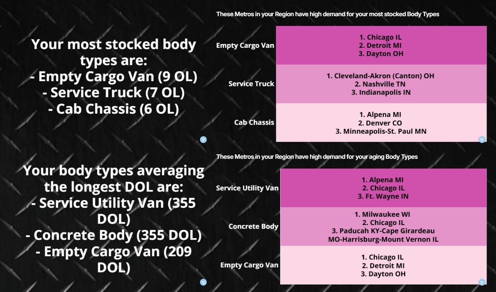

Growth Analytics &
Risk Automation
Case Study: Building the end-to-end internal and external analytics ecosystem for 'BusinessBuilder' to drive dealer marketing ROI and automate churn risk detection.

Figure 1: Automated internal anomaly detection matrix, tracking MoM deviations across traffic, clicks, conversion ratios, and critical ad spend failures.

Figure 2: External client-facing demand interface, dynamically matching a dealer's overstocked and aging inventory (Days on Lot) with high-intent regional metro targets.
Executive Summary
When launching a high-value marketing add-on product like BusinessBuilder (Meta/Google Ad integration), scaling customer success requires transitioning from manual account management to data-driven, proactive intervention. I was integral in architecting the end-to-end internal and external reporting ecosystem for this product rollout. By developing an automated data-informed alert system, a spend-efficiency optimization matrix, and automated client-facing consultation dashboards, this initiative protected recurring revenue, maximized dealer marketing ROI, and equipped the sales team with high-impact winback assets.
Phase 1: Internal Risk Automation (The Churn Mitigation Engine)
To scale a customer success team effectively, account managers cannot afford to look at dashboards retroactively. They need automated anomaly detection. I engineered an internal proactive alert system that dynamically flags dealer accounts experiencing critical performance deviations in three high-risk categories:
- MoM Traffic Drops: Automated tracking to catch sudden engagement anomalies before monthly reporting cycles.
- Ad Spend Variances (Billing Protections): Instantly flags sharp MoM drops in ad spend, which typically pinpoint silent mechanical failures—such as expired or rejected credit cards on file—preventing prolonged campaign downtime.
- Click-to-LPV (Landing Page View) Bottlenecks: Automatically monitors the ratio between user clicks and successful page loads. A severe divergence indicates technical URL breakdowns (such as broken or malformed UTM parameters), allowing the technical team to intervene immediately.
Phase 2: Internal Strategy & Retention (Maximizing the Dollar)
Beyond risk mitigation, I designed analytical frameworks to drive direct business outcomes and protect account volume:
- Metrics-Per-Spend Optimization Matrix: I conducted a historical performance analysis combining ad spend layers and administrative fees. By plotting the point of diminishing returns, I provided data-backed guardrails for sales teams, allowing them to advise dealers on the exact allocation threshold that yields the highest statistical return for their budget.
- Sales Cancel & Winback Dashboard: Created a streamlined, high-utility interface for sales teams. This customized dashboard acts as a direct tech-touch asset, empowering reps with immediate performance metrics to salvage accounts threatening cancellation or to build compelling, data-backed winback cases for previous customers.
Phase 3: External Consulting Assets (The Client Value Stream)
To cement the value of the BusinessBuilder product directly with the customer, I designed a suite of multi-tier external reporting assets that elevated frontline account reviews:
- Quarterly Business Review (QBR) Suites: Standardized high-level execution summaries blending macro logistics with digital engagement metrics (including month-to-month trending traffic, trucks sold, Days to Turn (DTT), total web leads, CTR, top vehicle engagement, and VDP views).
- Market Demand Consult Dashboard: Developed a forward-looking advisory tool showing dealers the Top 5 body types in demand in their immediate geographic market, alongside a heat map of regional and national metro areas actively searching for the specific inventory currently sitting on their lot.
- Always-On Client Portal Dashboards: Designed an intuitive self-service portal dashboard enabling dealers to monitor live, transparent metrics for Ad Spend, Clicks, and CPC at their convenience.
Business Impact & Results
The deployment of the BusinessBuilder analytics ecosystem transformed a complex digital marketing rollout into a transparent, scalable revenue driver:
- Proactive Revenue Protection: The billing and UTM parameter anomaly detection alerts allowed customer success teams to resolve system friction points within 24–48 hours, preventing campaign drop-offs and saving thousands in at-risk contract revenue.
- Scalable CSM Capacity: Self-service client dashboards and standardized QBR suites cut the manual reporting burden on account managers by over 50%, enabling teams to manage larger account portfolios.
- Data-Driven Sales Strategy: The spend-efficiency matrix moved sales conversations away from arbitrary budgets and toward predictive value modeling, expanding add-on cross-sell opportunities.